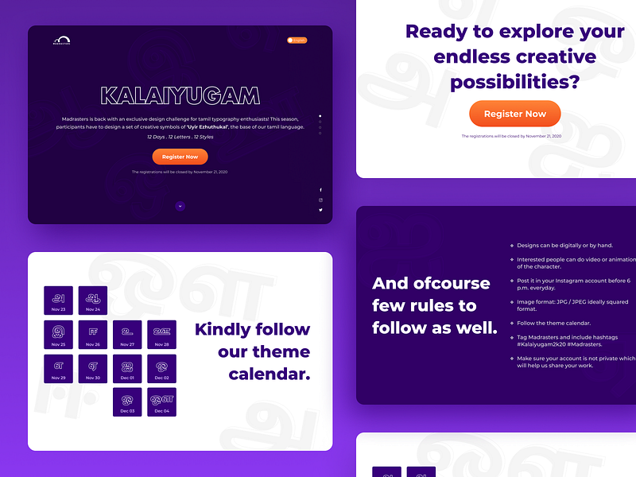
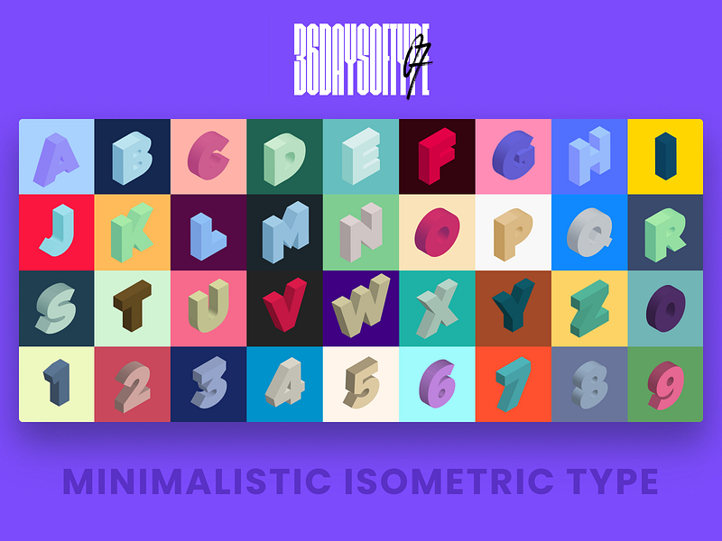
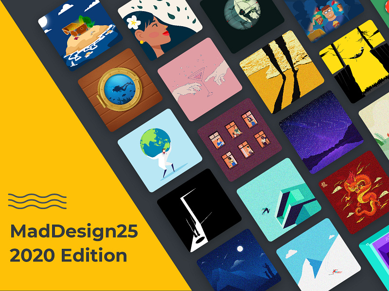
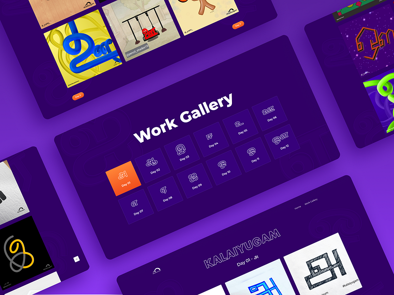
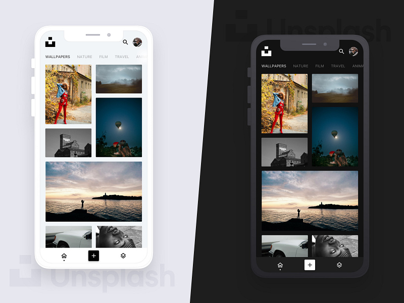
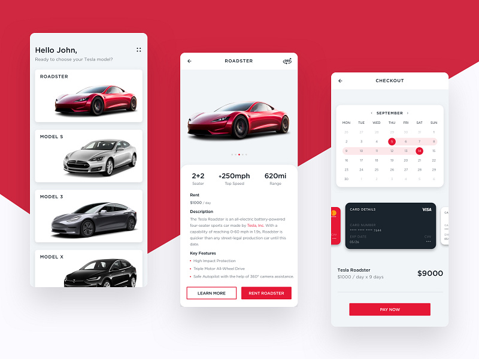
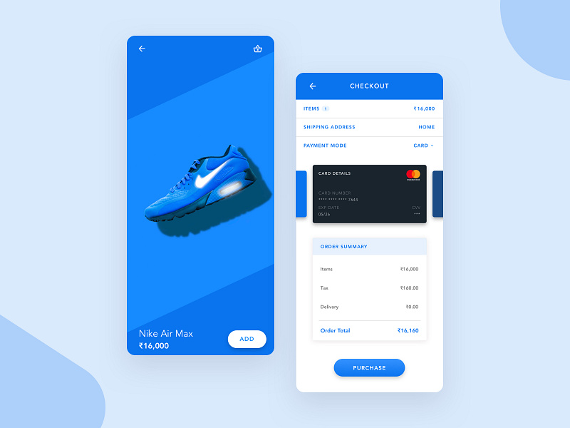
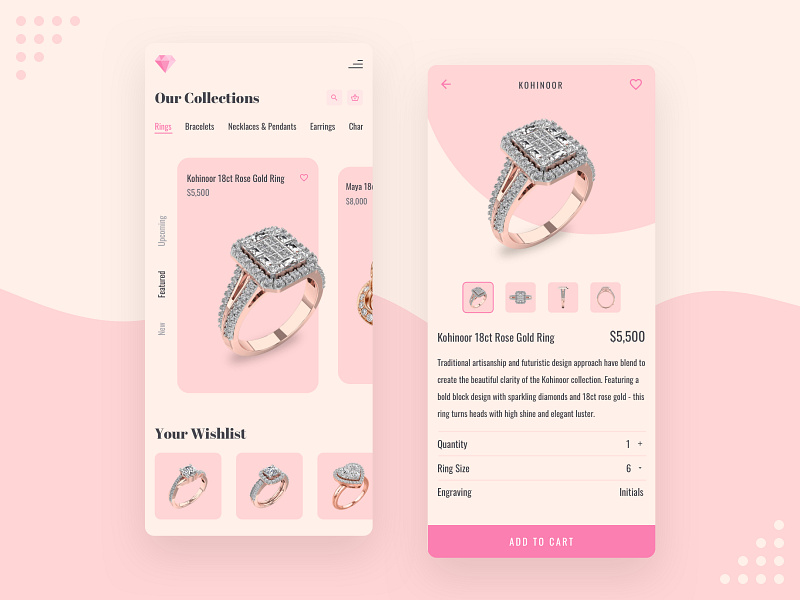
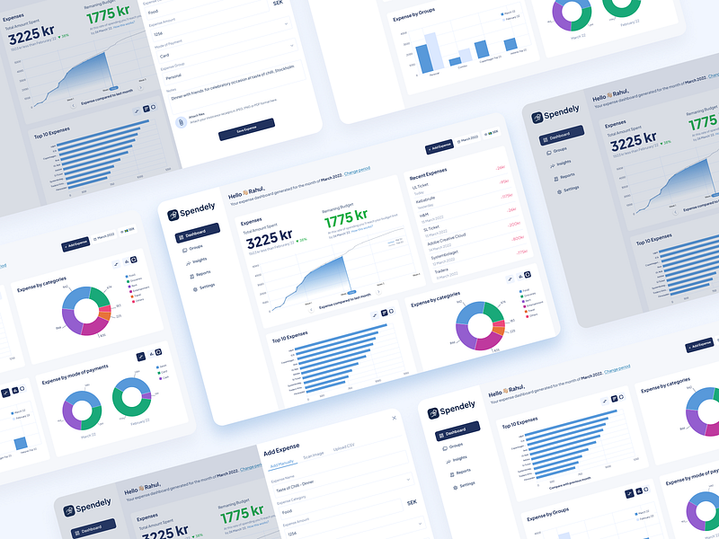

return
Labs
Things I built or designed to learn something, outside of my day jobs.
Dev experiments
Case study · 2020UXwikiA glossary of UX terms with curated reading, designed and built on Eleventy. Tool · NetlifyLink PreviewerPaste a URL, get its title, description, images, and video.Tool · NetlifyUX QuotesA daily dose of UX motivation.Case study · 2019Know Your VoteAn accessible election information site for Chennai, built in under two weeks. 8,000+ visitors.
Tool · NetlifyLink PreviewerPaste a URL, get its title, description, images, and video.Tool · NetlifyUX QuotesA daily dose of UX motivation.Case study · 2019Know Your VoteAn accessible election information site for Chennai, built in under two weeks. 8,000+ visitors. Web component · GitHubStencil date-timeA web component for date, time, and time zone, published on npm.Code · CodePenCodePenSmall front-end experiments.Code · GitHubGitHubEverything else I’ve written code for.
Web component · GitHubStencil date-timeA web component for date, time, and time zone, published on npm.Code · CodePenCodePenSmall front-end experiments.Code · GitHubGitHubEverything else I’ve written code for.
Tool · NetlifyLink PreviewerPaste a URL, get its title, description, images, and video.Tool · NetlifyUX QuotesA daily dose of UX motivation.Case study · 2019Know Your VoteAn accessible election information site for Chennai, built in under two weeks. 8,000+ visitors.Web component · GitHubStencil date-timeA web component for date, time, and time zone, published on npm.Code · CodePenCodePenSmall front-end experiments.Code · GitHubGitHubEverything else I’ve written code for.Design explorations
Web design · 2020Kalaiyugam event webpageA single-page, responsive site for Madrasters’ Tamil typography challenge, with the theme calendar and rules.

Type · 202036 Days of TypeAn isometric take on the letters and numbers of the Latin alphabet.
Graphic design · 2020MadDesign25A minimal design on a new theme every day for 25 days, for Madrasters’ online project.
Web design · 2021Kalaiyugam work galleryA gallery for the 50+ designers and artists who reimagined the Tamil vowels, Uyir Ezhuthukal, in the challenge.
App concept · 2019UnsplashA clean, minimal app concept, with a dark mode.
App concept · 2019Tesla rentalA rental app for Tesla cars, built from cards and soft shadows.
UI · 2019Nike checkoutA checkout screen for the Nike app.
App concept · 2019Jewellery appA UI concept made for an Inktober 2019 prompt.
App concept · 2022SpendelyAn expense manager for international students. The full case study is on this site.
Profile · DribbbleAll shotsThe full collection on Dribbble.Profile · BehanceBehanceMore projects and presentations.